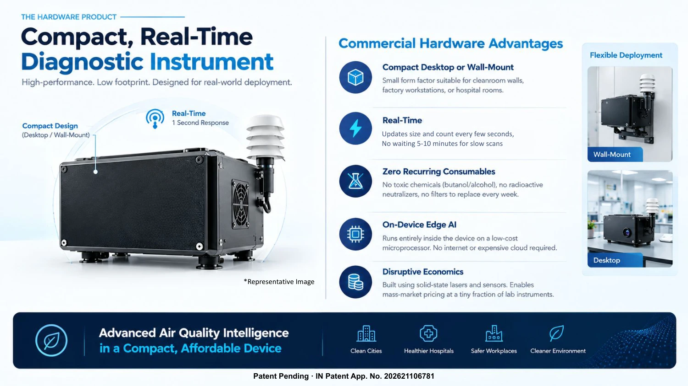

Patent pending · IN 202621106781
Read about the platform →
Multi-wavelength, multi-angle optical scattering platform
A mass-deployable optical diagnostic that combines multi-wavelength laser probing, multi-angle light collection and physics-informed deep learning to retrieve aerosol size distributions and optical properties in real time, at a fraction of laboratory-instrument cost.
~10 nm
Smallest size resolved
1 s
Response, no scan delay
9
Optical signals
0.29%
Mean-size error (MAPE)

